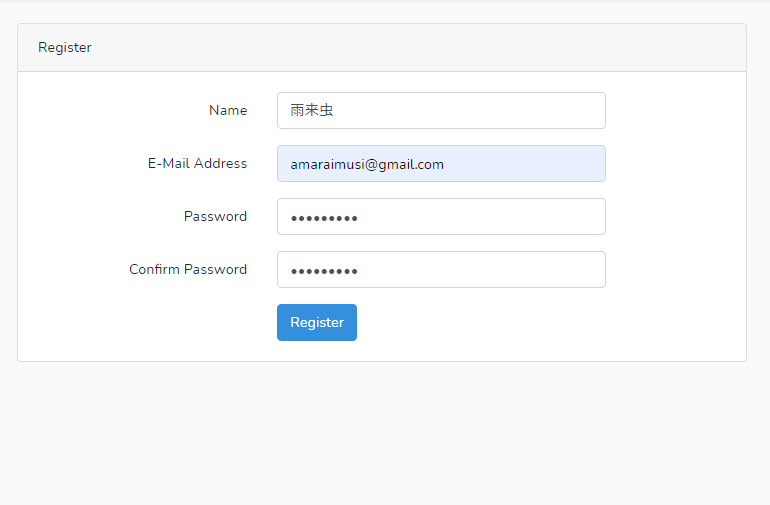

Laravel8のインストールと初期設定
インストールの概要
Composerを利用してインストールしなければならないようだ。また、コマンドラインで初期設定がいろいろ必要である。
前提条件
- Windows10
- xampp(2021年11月時点での最新版。PHP8.0)
- コマンドラインツールにGitBash（Git for windowsに含まれるツール）を利用。
- GitBashでnpmコマンドが使えるようにしてあること。
- GitBashでphpコマンドが使えるようにしてあること。
手順
-
Windows10に新しくxamppをインストールしたばかりなら、php_intlを有効にする必要がある。
php.iniを開き、下記のパラメータを有効にする。(「;」をはずす)
extension=intl
extension=gd

php.iniを変更したらApacheの再起動を忘れぬように。
-
GitBashを起動。
任意のプロジェクトを作成し、cdコマンドでそのプロジェクトの場所まで移動する。
今回の手順例では,プロジェクト名を「crud_base_laravel8」としている。$ cd ~/git/crud_base_laravel8
-
Windows環境だとttyなんとかのエラーがよく出るため、それ防止用に下記コマンドを実行。
$ exec winpty bash
-
composer.pharをダウンロードする
$ php -r "readfile('https://getcomposer.org/installer');" | php -
Laravel8をインストール
$ php composer.phar create-project "laravel/laravel=8.*" dev
-
localhost環境(開発環境)でシンボリックリンクを作成する。
「C:\xampp\htdocs」配下に直接プロジェクトを作成しているならこの処理は不要。
手順
Windows Power Shellを管理者として実行する。（Windows Power Shellのアイコン右クリック→管理者として実行」
下記コマンドでシンボリックリンクを作成する。。
cmd /c mklink /D C:\xampp\htdocs\crud_base_laravel8 C:\Users\user\git\crud_base_laravel8
-
ブラウザにて「http://localhost/crud_base_laravel8/dev/public/」にアクセスし、エラーがでずにページが表示されたらとりあえずOK.

-
xamppでphpMyAdminを起動し、新しくデータベースを作成する。
照合順序は「utf8mb4_general_ci」を推奨。
テーブルは作成しなくてよい。後ほど、マイグレーションでいくつかテーブルを自動生成する。
例ではcrud_base_laravel8というデータベース名でデータベースを作成した。
-
DB設定をする。「.env」ファイルを開き、以下のような記述に書き換える。
DB_CONNECTION=mysql DB_HOST=localhost DB_PORT=3306 DB_DATABASE=crud_base_laravel8 DB_USERNAME=root DB_PASSWORD=
-
続いていくつかの初期設定をする。
再びGitBashに戻り、devディレクトリに移動する。$ cd dev
-
ログインフォームなど使えるようにするため、composerで下記をインストールする。
$ composer require laravel/ui
-
sessionsテーブルを作成するために必要なコマンド。（マイグレーション情報に追加？）
$ php artisan session:table
-
マイグレーションを実行する。DBに最低限必要なテーブルをいくつか自動生成する。
$ php artisan migrate
-
マイグレーションが成功したかどうか下記のコマンドで調べられる。
$ php artisan migrate:status
成功例

失敗例。sessionsテーブルだけ作成できていないケース
-
続いて、jsとcssのパッケージをインストールおよびビルドする必要がある。
Bootstrapを使いたいなら下記コマンドを実行する。 するとnpmのインストール情報に追加されるようだ。このタイミングではまだインストールされていない。
$ php artisan ui bootstrap
-
Vue.jsを使いたい場合
$ php artisan ui vue
他のJSライブラリについて -
jsおよびcssのインストールおよびビルド。
この辺りでエラーが頻発してしまい、いろいろ試行錯誤してしまった。
なのでコマンドの実行順は推測である。
インストール。npm install
アップデート。試行錯誤で試したがこれで上手くいったのかは不明。npm update
ビルド。エラーが頻発する。エラーが出た場合、上記のコマンドをもう一度試みる。npm run dev
-
再びブラウザにて「http://localhost/crud_base_laravel8/dev/public/」にアクセスし、画面右上のRegstryをクリック。
ログインフォームが表示されるので、画面右上のRegstryから適当にユーザー登録する。
なお、レイアウトが崩れているなら、上記の「jsおよびcssのインストールおよびビルド」に失敗している。

-
これで開発環境は整ったと思われる。多分。
終わり。
-
追記：DBテーブルのフィールド型がdatetime型だと空値で苦しむことになる。
対策→Larevelの日付更新エラー SQLSTATE[22007]: Invalid datetime format Larevelの日付更新エラー
laravel7とlaravel8の大きな違い
| 説明 | laravel7 | laravel8 |
|---|---|---|
| web.php: ルートの書き方が変わった。 | Route::get('neko', 'NekoController@index'); | Route::get('neko', 'App\Http\Controllers\NekoController@index'); |
created_atとupdated_atのフィールド名を変更する
Laravel8の日時系フィールドはcreated_atとupdated_atである。 別のフィールド名に変更したい場合はマイグレーション側とモデルクラスに記述する必要がある。モデルクラス側だけ変更してもエラーになる。マイグレーション
$table->timestampTz('created')->nullable();
$table->timestampTz('modified')->nullable();
モデルクラス
class Tanuki extends Model
{
const CREATED_AT = 'created';
const UPDATED_AT = 'modified';
}
別の方法
テーブルにcreated_atとupdated_atが存在しないならdatetime型で新規追加する方法もある。テーブルにcreated_atとupdated_atが存在しないときに起きるエラー。
SQLSTATE[42S22]: Column not found: 1054 Unknown column 'users.updated_at' in 'field list' (SQL: update `users` set `role` = oparator, `users`.`updated_at` = 2021-11-25 09:14:28 where `id` = 218)